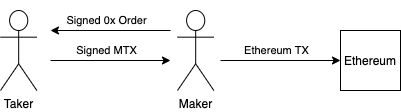

Meta-Transactions
Meta-Transactions are signed messages that instruct the 0x Protocol to run function(s) in the context of the signer. This signed mtx can then be shared off-chain, allowing anyone to execute on-chain. This is useful for integrators who would like to subsidize the Ethereum Gas Fee, or add custom smart contract logic to run atomically a fill. A signed meta-transaction can only be executed once.
A common use case for this is in Request For Quote (RFQ) systems. The Maker creates an order; the Taker signs a mtx permitting 0x Protocol to fill the order on their behalf; the mtx is returned to the Maker who submits it on-chain.

Constructing
To construct a Meta-Transaction, abi-encode the following struct and sign it.
/// @dev Describes an exchange proxy meta transaction.
struct MetaTransactionData {
// Signer of meta-transaction. On whose behalf to execute the MTX.
address payable signer;
// Required sender, or NULL for anyone.
address sender;
// Minimum gas price.
uint256 minGasPrice;
// Maximum gas price.
uint256 maxGasPrice;
// MTX is invalid after this time.
uint256 expirationTimeSeconds;
// Nonce to make this MTX unique.
uint256 salt;
// Encoded call data to a function on the exchange proxy.
bytes callData;
// Amount of ETH to attach to the call.
uint256 value;
// ERC20 fee `signer` pays `sender`.
IERC20Token feeToken;
// ERC20 fee amount.
uint256 feeAmount;
}
The calldata field is specific to the function you wish to execute. At this time, the following functions are supported:
Signing
Meta-Transactions use the same signing technique as 0x Orders; see the How to Sign section of the Orders documentation. See getMetaTransactionHash for generating a unique hash for your mtx.
Functionality
Function |
Overview |
Executes a single meta-transaction |
|
Executes a batch of meta-transactions. |
|
Returns the block that a meta-transaction was executed at. |
|
Same as |
|
Returns the hash of a meta-transaction. |
executeMetaTransaction
A single Meta-Transaction is executed by calling executeMetaTransaction. A batch of mtx’s can be executed by calling batchExecuteMetaTransactions.
/// @dev Execute a single meta-transaction.
/// @param mtx The meta-transaction.
/// @param signature The signature by `mtx.signer`.
/// @return returnResult The ABI-encoded result of the underlying call.
function executeMetaTransaction(
MetaTransactionData calldata mtx,
LibSignature.Signature calldata signature
)
external
payable
returns (bytes memory returnResult);
A MetaTransactionExecuted event is emitted on succes. The returnResult contains the raw return data for the executed function. For example, if the function returns a uint256 then the returnResult could be abi-decoded into a uint256.
This call will revert in the following scenarios:
The address in the
mtx.senderfield does not matchmsg.sender.The mtx has expired.
The Ethereum transaction’s gas price (
tx.gasprice) is outside of the range[mtx.minGasPrice..mtx.maxGasPrice]The ETH sent with the mtx is less than
mtx.valueThe allowance/balance of
signeris insufficient to payfeeAmountoffeeTokento thesender(if specified)The signature is invalid.
The mtx was already executed
The underlying function is not supported by meta-transactions (see list above).
The underlying function call reverts.
batchExecuteMetaTransactions
/// @dev Execute multiple meta-transactions.
/// @param mtxs The meta-transactions.
/// @param signatures The signature by each respective `mtx.signer`.
/// @return returnResults The ABI-encoded results of the underlying calls.
function batchExecuteMetaTransactions(
MetaTransactionData[] calldata mtxs,
LibSignature.Signature[] calldata signatures
)
external
payable
returns (bytes[] memory returnResults);
A MetaTransactionExecuted event is emitted for each mtx on succes. The returnResult contains the raw return data for the executed function This call will revert if the one of the mtxs reverts. Any exceess Ether will be refunded to the msg.sender.
getMetaTransactionExecutedBlock
The block.number is stored on-chain when a mtx is executed. This value can be retrieved using the following function.
/// @dev Get the block at which a meta-transaction has been executed.
/// @param mtx The meta-transaction.
/// @return blockNumber The block height when the meta-transactioin was executed.
function getMetaTransactionExecutedBlock(MetaTransactionData calldata mtx)
external
view
returns (uint256 blockNumber);
getMetaTransactionHashExecutedBlock
This is a more gas-efficient implementation of getMetaTransactionExecutedBlock.
/// @dev Get the block at which a meta-transaction hash has been executed.
/// @param mtxHash The meta-transaction hash.
/// @return blockNumber The block height when the meta-transactioin was executed.
function getMetaTransactionHashExecutedBlock(bytes32 mtxHash)
external
view
returns (uint256 blockNumber);
getMetaTransactionHash
The hash of the mtx is used to uniquely identify it inside the protocol. It is computed following the EIP712 spec standard. In solidity, the hash is computed using:
/// @dev Get the EIP712 hash of a meta-transaction.
/// @param mtx The meta-transaction.
/// @return mtxHash The EIP712 hash of `mtx`.
function getMetaTransactionHash(MetaTransactionData calldata mtx)
external
view
returns (bytes32 mtxHash);
The simplest way to generate an order hash is by calling this function, ex:
bytes32 orderHash = IZeroEx(0xDef1C0ded9bec7F1a1670819833240f027b25EfF).getMetaTransactionHash(mtx);
The hash can be manually generated using the following code:
bytes32 orderHash = keccak256(abi.encodePacked(
'\x19\x01',
// The domain separator.
keccak256(abi.encode(
// The EIP712 domain separator type hash.
keccak256(abi.encodePacked(
'EIP712Domain(',
'string name,',
'string version,',
'uint256 chainId,',
'address verifyingContract)'
)),
// The EIP712 domain separator values.
'ZeroEx',
'1.0.0',
1, // For mainnet
0xDef1C0ded9bec7F1a1670819833240f027b25EfF, // Address of the Exchange Proxy
)),
// The struct hash.
keccak256(abi.encode(
// The EIP712 type hash.
keccak256(abi.encodePacked(
"MetaTransactionData("
"address signer,"
"address sender,"
"uint256 minGasPrice,"
"uint256 maxGasPrice,"
"uint256 expirationTimeSeconds,"
"uint256 salt,"
"bytes callData,"
"uint256 value,"
"address feeToken,"
"uint256 feeAmount"
")"
)),
// The struct values.
mtx.signer,
mtx.sender,
mtx.minGasPrice,
mtx.maxGasPrice,
mtx.expirationTimeSeconds,
mtx.salt,
keccak256(mtx.callData),
mtx.value,
mtx.feeToken,
mtx.feeAmount
))
));